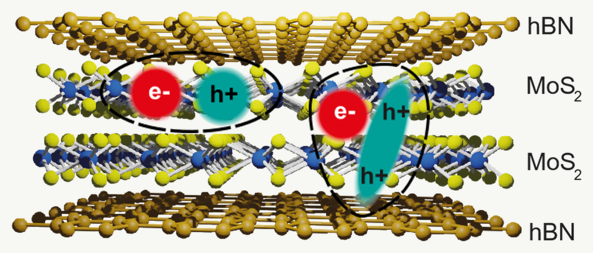
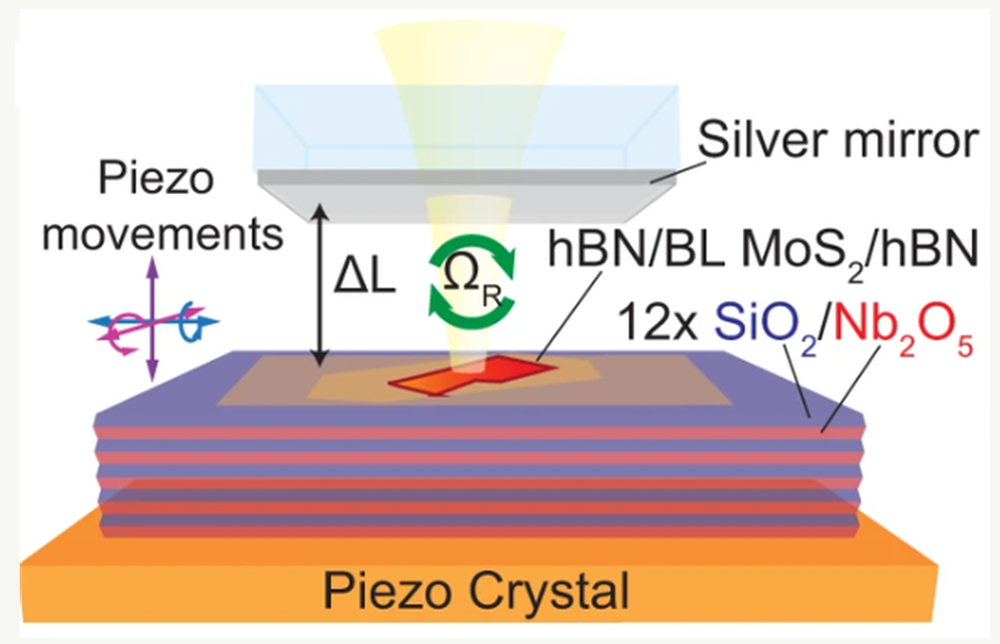
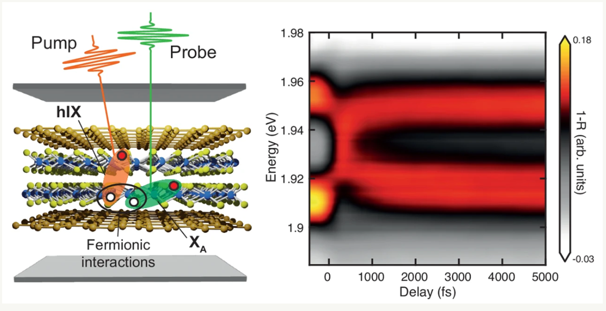
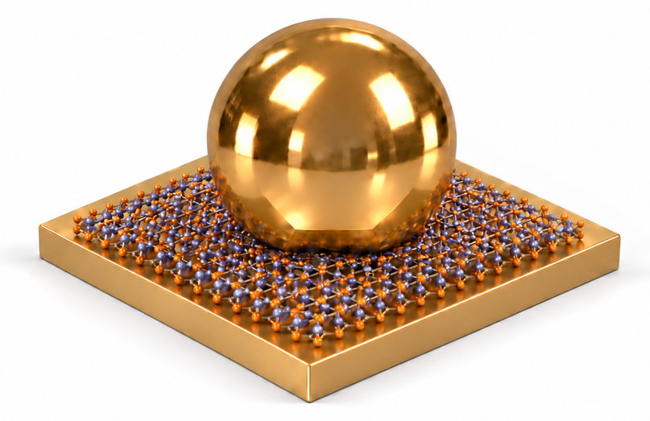
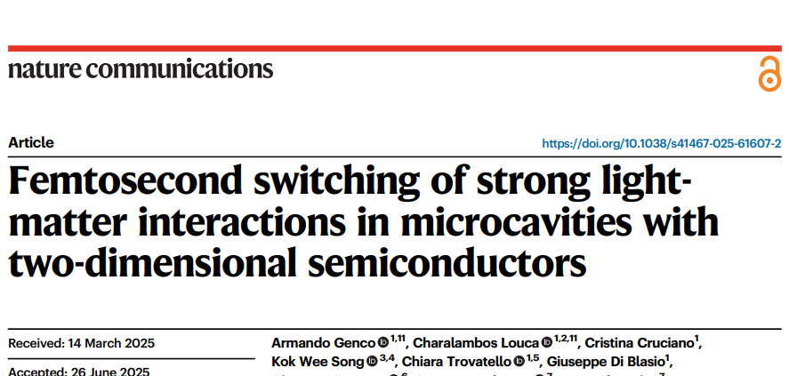
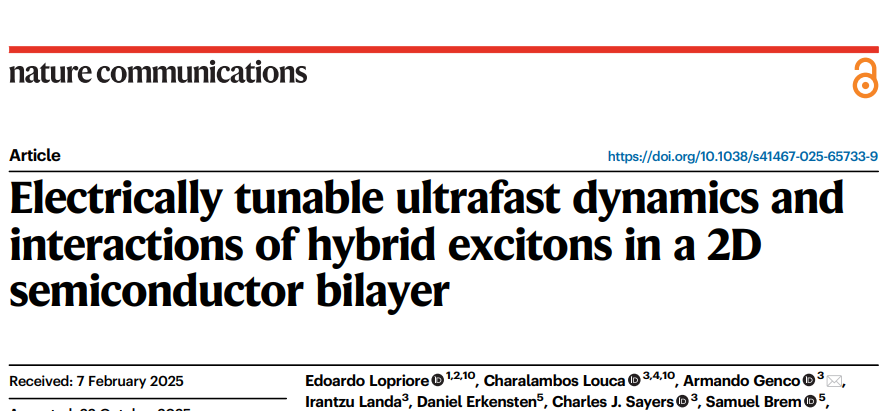
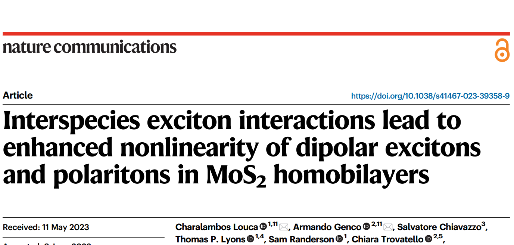
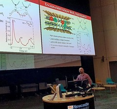
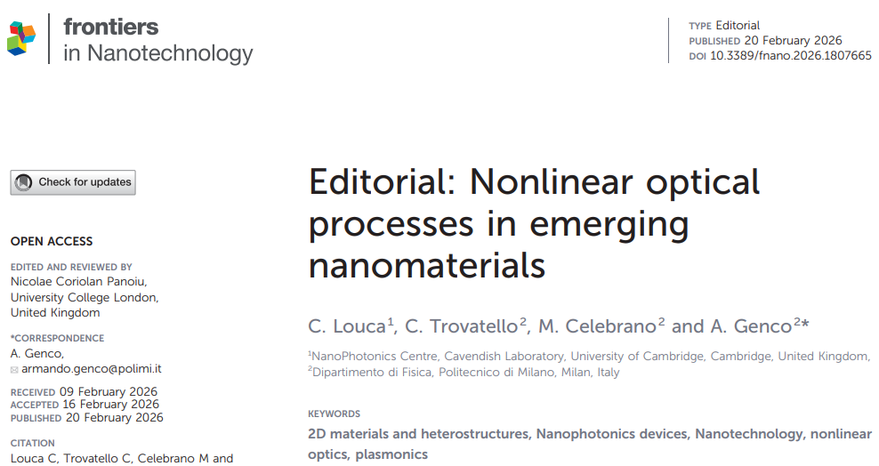

01
How do atomically thin layers change exciton interactions?
Stacking and electrical control tune interlayer and hybrid excitons in MoS₂.
Experimental physicist
I study how light interacts with atomically thin semiconductors, and how these interactions can be controlled on ultrafast timescales.
Using 2D-material heterostructures, optical microcavities, plasmonic nanocavities and femtosecond spectroscopy, I investigate excitons and polaritons for low-energy optical switching.
Research
Atomically thin semiconductors, optical cavities and nanogaps let me study strong light–matter interactions and ultrafast optical control across very different confinement regimes.

01
Stacking and electrical control tune interlayer and hybrid excitons in MoS₂.

02
TMD microcavities form polaritons and enhance nonlinear effects, including switching and polariton lasing.

03
Femtosecond spectroscopy tracks and drives switching at low pulse energies.

04
Plasmonic nanocavities strengthen light–matter coupling and nonlinear optical response under extreme confinement.
Selected work

A MoS₂ microcavity is switched reversibly from strong to weak light–matter coupling below 4 pJ per pulse, with up to 7.5 dB contrast.
Read the paper
Electric fields tune the interactions, formation and lifetime of hybrid excitons in a 2D semiconductor bilayer, measured with femtosecond spectroscopy.
Read the paper
Interactions between different exciton species in MoS₂ bilayers enhance optical nonlinearities in both excitons and polaritons.
Read the paperLatest

Invited talk on engineered light–matter interactions, covering 2D excitons, polaritons and plasmonic nanocavities.
Conference pageSelf-similar plasmonic nanocavities with discrete optical modes and enhanced light emission.

Editorial for Nonlinear Optical Processes in Emerging Nanomaterials, Frontiers in Nanotechnology.
EditorialProfiles